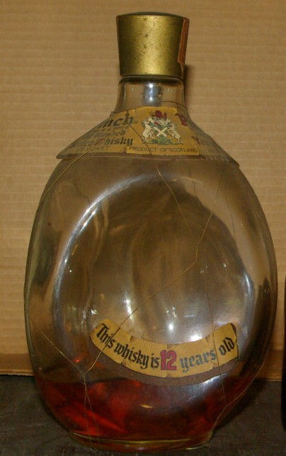
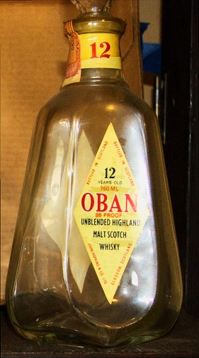

Notes on Padlipsky collection
This page focuses on the peculiar bottles.
Mike's rating scale was based on a
rating of a checkmark √ being
Very Good (worthy of further attention), and went up and down from
there with modifiers.
Most
of these are empties which I had to photo-document and recycle, so
these mostly do not still exist.
Photos
and text copyright 2011, 2012, 2021 William D Ricker (dba The Literary
Estate of Michael A Padlipsky), all rights reserved.
(WWDA was granted
first, non-exclusive right for Web reproduction, but alas is not more, and the photos and interactive text weren't in the archive.)
Table of Contents
- Abelour 10 VOHM
- Cardhu 12 (box)
- Ezra Brooks Bourbon wooden six pack
- Gordon & Macphail Tartan nip cartons
- Haig Dimple, Pinch
- Macallan 25, Anniversary, Wooden Box
- Oban 12 Tear-drop
- Tormore-Glenlivet Hexagonal
- Red Glass empty, unknown
- Laphroaig 15y with tin
- Lagavulin 15 in Clay jug
- Glen Grant, pyramid decanters
- Jameson Dublin
This bottle is fascinating because
Aberlour is the best selling whisky in France – which exports
Cognac and drinks whisky – and the bottle style is so very
brandy-esque, complete with VOHM marking.
Mike's rating: Aberlour 10 DOB
Good/Above Average (√-
check-minus).
Mike's commentary: “("Very
Old Highland Malt") Like Mortlach, but less sharp; decent
flavor/"smoke," somewhat thin, but better than remembered.”
I wonder whether Aberlour or Mortlach
has changed more in 20 years, since I wouldn't compare them today
(although I like both).
Recently re-introduced to the USA, but
this is unopened old stock.
Mike's rating: Cardhu 12 DOB
Good/Above Average (√-
check-minus).
Mike's commentary: “Marked
light and pleasant during C1 (Cairngorm
research trips #1, back in mid 1982);
probably lacks depth based on later acquisition on bargain sale (with
rebate, even).”
Ezra Brooks Bourbon wooden six pack
Wooden box of 6x200mL bottles
Label: “Ezra Brooks Rare Old Genuine
Sour Mash Kentucky Straight Bourbon Whiskey Real Sippin' Whiskey
Charcoal Filtered Aged 7 years 90 Proof” 200ml embossed.

The
G&M Tartan 5cl nip boxes are foil-stamped with the tartan
pattern's
name,
but only Red Grant around Glenfarclas (8yo 100bpr 57%abv) seems
appropriate to the
whisky
contained. Macallan (10y 40%) wears Urquhart, the tartan of the
owners of G&M; Linkwood (15y 40%) wears Fraser, Mortlach (15y
40%) Black Watch. The Mac and Glenfarclas appear to be official
releases in G&M wraps. (G&M were primary official source for
some distilleries in the Age of the Blends.
Note that the Glenfarclass says 100° proof, 57% -- that's old ° degrees British Proof.
Mike's rating: Macallan 12(not 10 as in
Nip) DOB Excellent (√+
check-plus), so interpolate √
Very Good for this 10y nip
Mike's rating: Glenfarclas 8 DOB Very
Good (nearly) (√ / √(-)
check or check (slight minus)).
Mike's rating: Linkwood DOB (not 15 as
in Nip) Very Good (√ check)
Mike's rating: Mortlach 12(not 15 as
in Nip) DOB Good to Very Good (√
/ √- check or check(minus)).
Haig's dimple
bottles are classics in design, whether sold as Pinch or.
Note “Scots”
as well as “Scotch”.
Label “The finest Blended Scots
Whisky content 4/5 Quart
100% Scotch Whiskies
Haig & Haig alcohol 86.8°
proof.”
Blended, no rating.

Pinch “This whisky is 12 years old”
“Blended Scotch Whisky”
Blended, no rating.
Macallan 25, Anniversary, Wooden Box
Label: “25 Years Old. Established
1824. The Macallan Anniversary Malt
A Special bottling of unblended Single
Higland Malt Scotch Whisky
25 Years Old-fashioned
25
In the heart of the Speyside, …
incomparable experiences.
86 Proof 750 ml
Distilled and Bottled by
Macallan-Glenlivet PLC Graigellachie
Scotland
Imported by
Bermen Imports, Los Angeles CA
Product of Scotland”
Also, this is from before The Glenlivet
requested other Speysiders stop using Hyphen Glenlivet to indicate
their Speyside-ness.
Priced $65.00. (back when the $ was worth something)
Mike's rating: Macallan 25 DOB Superb
([*]), which puts it
top-ten lifetime, only two higher.
Mike's commentary: “Ever
so slightly smoother than the 17/18 y.o.; possibly fractionally less
peaty; not really "worth" twice the price, except to a
fanatic. Probably a bit more nose than the 17; at any rate, certainly
Top Five. [96: And now it's three times the price....]”

This pre-mergers Oban bottle is
tear-drop shaped with a diamond lozenge label. Note use of
“unblended” on the label.
Label: “Bottled in Scotland 12 years
old 750ml Oban 86 Proof Unblended Highland Malt Scotch Whisky John
Hopkins & co, Glasgow Scotland”
Mike's rating: Oban 12 DOB Good/Above
Average ( √- , check
minus).
Mike's commentary: “Smooth,
very slight bite, not long on flavor but barely worth a mark after
entering the Reference Collection by virtue of being on sale at
Trader Joe's for $8 and getting more exposure. [Upgraded after '91.]”
Noteworthy that the glass is hexagonal
but shipped in a round tube.
Also, this is from before The Glenlivet
requested other Speysiders stop using Hyphen Glenlivet to indicate
their Speyside-ness.
Label: “10 Years Old. The Tormore
Glenlivet. Unblended Higland Malt Scotch Whisky. Product of Scotland.
750ml. 86 US proof.”
Mike's rating: Tormore 10 DOB Average
( - , minus).
Mike's commentary: “Slightly
sharp; light; somewhat fuller than Jura, which it resembles.”
This peculiar
specimen was with Mike's empties. I don't know that it was a Bourbon
decanter, it might have had some other spirits, or have been merely
decorative. But it's certainly distinctive bottle packaging. If
anyone recognizes it, please share the word!

Label “Laphroig Unblended Malt
Scotch Whisky from the Isle of Islay. 15 years old”
Mike's rating: Laphroig 15 DOB
Excellent (or better), [√+(+)]
Mike's
commentary “A
revelation compared to other bottlings of it; almost as smooth as
Port Ellen, almost as peaty as Lagavulin! Very limited supply,
though. [Ages badly.] {Added
4th Ed.(July
1996):
Supply has picked up since C2/3, (Cairngorm
research trips 2&3, back in late '80s or early '90s)
but price has been obscenely jacked up; and the "(+)" isn't
really deserved, except in historical context.}”
Silkscreened Label “Lagavulin. Islay
Malt scotch whisky. The Lagavulin disillery was founded in 1742. In
general in means 'hollow of the mill.' Mountain air,n moorland peat
and pure spring water give this malt it's distingtive characterf.
Specially Selected. 45% vol. 75Cl 750ml Limited Edition.”
Sticker “45% Alc/Vol” because
“45%vol” wasn't bureaucratically precise.
Mike's rating: Lagavulin 15 DOB
merely Very Good [√]
Mike's
commentary “The
one in the crock; a somewhat disappointing New Year's Eve
self-present.” Mike's favorite Islay was Lagavulin, but
much younger, the “original
white & black packaging” of Lagavulin 12 DOB, rated
Excellent [*] (top ten); he preferred older 16 DOB to mid-90s 16
DOB, but rated both current above Laphroig 15, which he preferred to
this crock – all Very Good or better.
These look rather like Retsina bottles?
They are rather old, since they were already old when Mike got them.
Were these imported for Greek and Italian restaurants' bars?
Glen Grant was the single malt of Italy.
Label: “Glen Grant Glenlivet
Highland Malt Scotch Whisky 10
Years Old. Specially reserved and bottled by Moray Bonding Co 100 %
Scotch Whisky 4/5 Quart 86 Proof”
Label (neck):
“Distilled by J&J Grant, Glen Grant Ltd Rothes Scotland /
Imported by Jack Gross & Co. Baltimore Maryland ”
Tartan paper-clad
box has duplicate of above labels.
Cast into neck:
“Federal Law forbids sale or re-use of this bottle”
Sticker “New York
Distributors Star Liquor Dearlers Inc Long Island City, N.Y.”
“Importers and
Massachusetts Distributors Chas. L. Richardson & Co. Inc., Boston
/ Established 1861” on the 15yo.
Note no zip code.
15yo main label identical to 10yo other than 15.
Note “Glenlivet
Highland” was former name of the Speyside region.
Note “Moray
Bonding” sounds initially like an independent bottling to a modern
ear, but Moray was a (?the?) major source for Glen Grant in the
Blended Era. Moray Bonding was active 1947 – 2003, subsumed into
Chivas/Pernod, as was Glen Grant.
Mike's Rating for both Glen Grant 10
and 15 in Decanter: Good/Above Average (
√- , check minus).
Mike's Commentary “These
two were courtesy of Marty (of Marty's Fine Wines etc.), in a very
old packaging of nice decanters; both drinkable, though somewhat
corky by now. (Found in father's basement by some other customer of
his; sold to me for token price.)”
And alas very, very corky by the time i tasted the remnants - no alcohol nor other detectable aromatics; about all that was left was E150a industrial karamel and Water.
Auction
records for this expression show this if unopened these would be
quite valuable today. McTears Lot 340 28 June, 2006 £920;
Christies Glasgow Lot 362 / Sale
6253 25 November 1999
£2,530 ($4,069) incl.premium Two
15y appear to match, but without photos.
This is a piece of history – Jameson
once had a Dublin distillery.
Label “John Jameson & Son limited
Pure old pot still established ad 1780
JJ&S Bow St Distillery Dublin
Ireland
DUBLIN WHISKEY”
Bottle number “N 167192”
Label(lower) “Not a drop / is sold
till / it's seven / years old”
(Mike would have appreciated the rhyme
wasn't forced by line breaking.)
Reference Mark Gillespie's WhiskyCast interview from Dublin -
Eps #328 2011-08-07, on location in Dublin
MP3
Mike Padlipsky's Scotch malt whisky obsession and proto-blogger note-taking was covered on
Whiskycast Eps 349, Dec 24, 2011.